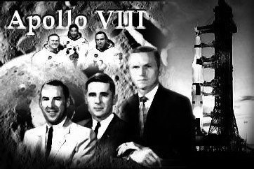
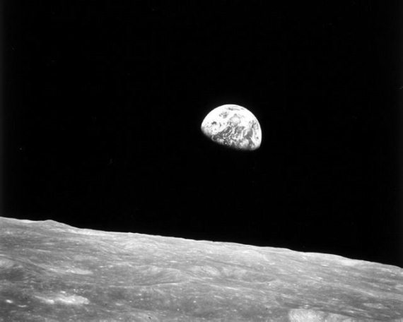

Вокруг Луны
Первоначальные планы, которые были составлены НАСА в 1967–1968 годах, не предусматривали полет «Аполлона-8» к Луне. Как и предыдущий корабль, он должен был покружить по орбите вокруг Земли. В ходе полета планировалось провести испытания корабля в полной конфигурации: командный модуль плюс лунная кабина. Однако, о чем я упоминаю уже не первый раз, сроки поджимали. Было принято решение отложить испытания лунной кабины на 1969 год, а в 1968 году провести облет Луны.
У американцев были веские основания провести рокировку своих планов. В ноябре 1968 года «отлетал» очередной советский лунный корабль – «Зонд-6» и теоретически уже следующий аппарат мог нести на своем борту экипаж. Его готовили к полету, и американцы об этом знали. Группа советских космонавтов даже вылетела на Байконур и две недели находилась в готовности к старту. Ждали только разрешения из Москвы. Но так и не дождались. Если бы у советского руководства тогда хватило смелости пойти на риск, то итог лунной гонки мог быть иным. А вот у американцев хватило духу рискнуть, поэтому именно они и пили шампанское за свою победу.
Старт «Аполлона-8» состоялся 21 декабря 1968 года. На борту лунного корабля находились Фрэнк Борман (командир), Джеймс Ловелл и Уильям Андерс. Совершив полтора витка вокруг Земли, «Аполлон-8» перешел на траекторию полета к Луне. Скорость, которую набрал при этом корабль, была столь большой, что астронавты видели в иллюминаторы, как уменьшается Земля.
Полет по трассе «Земля-Луна» занял 66 часов. Нельзя сказать, что все это время астронавты были перегружены работой. Больше времени отнимала «возня» с космическим туалетом, чем проведение полетных операций. Такой свободный график был составлен сознательно – никто не знал, что предстоит экипажу, поэтому много времени было отведено на отдых и наблюдения Земли и Луны.

Они первыми отправились к Луне
И вот 24 декабря наступил «момент истины» – «Аполлону-8» предстояло выйти на селеноцентрическую орбиту. В Хьюстоне, где собралось все руководство лунной программы, напряжение достигло своего апогея. Включение двигателя должно было произойти, когда корабль окажется за Луной, вне зоны видимости с Земли. Астронавты могли полагаться только на себя, а людям в центре управления полетом предстояло пережить несколько весьма неприятных минут В положенное время Ловелл нажал кнопку и включил двигатель корабля. Он должен был отработать 248 секунд – ни больше, ни меньше. Как потом вспоминали астронавты, это были самые долгие минуты в их жизни. И хотя отключение должна была провести автоматика, Борман не выдержал и толкнул кнопку выключателя – на всякий случай.
Спустя несколько минут «Аполлон-8» вышел из-за диска Луны и командир доложил на Землю: «Хьюстон. Двигатель сработал». Один из диспетчеров в центре управления полетом не выдержал и завопил: «Мы взяли! Мы взяли! Они на орбите!..».
Полет по селеноцентрической орбите был не долог – всего десять витков. Астронавты не отрываясь смотрели в иллюминаторы, «впитывая» лунные пейзажи. В отличие от первых трех дней, четвертые сутки полета были насыщены работой до такой степени, что в какой-то момент Борман своим командирским решением отправил коллег отдыхать, чтобы сохранить их работоспособность. Впереди предстояло не менее ответственная задача – возвращение домой.
Но перед тем, как уйти с орбиты вокруг Луны, состоялся прямой телевизионный эфир на весь мир. Астронавты рассказали о своем полете, с помощью ручной камеры показали землянам «лунное безмолвие». В завершение Андерс, Ловелл и Борман по очереди читали из Книги Бытия: «В начале сотворил Бог небо и землю. И назвал Бог сушу землею, а собрание вод назвал морями, произвела земля зелень, траву, сеющую семя по роду [и по подобию] ее, и дерево [плодовитое], приносящее плод, в котором семя его по роду его [на земле]. И сказал Бог: да будут светила на тверди небесной [для освещения земли и] для отделения дня от ночи, и для знамений, и времен, и дней, и годов. И создал Бог два светила великие: светило большее, для управления днем, и светило меньшее, для управления ночью, и звезды. И увидел Бог, что это хорошо.».
Как и при подлете к Луне, включение маршевого двигателя для возвращения астронавты должны были осуществить вручную, когда «Аполлон-8» будет находиться за Луной. Это должно было произойти за несколько минут до наступления католического Рождества. Согласно расчетам, если операция заканчивалась успешно, то в зоне видимости с Земли корабль должен был появиться через девятнадцать минут после полуночи. Если бы двигатель не сработал, то радиоконтакт наступил бы на восемь минут позже.
Трудно сказать, когда атмосфера в центре управления полетом была напряженнее: когда корабль выходил на орбиту вокруг Луны или когда «Аполлону-8» предстояло взять курс на Землю. В ситуации, когда нет возможности вмешаться, а остается только ждать, время всегда как будто останавливается.
На циферблате в Хьюстоне цифры сменяли одна другую. Вот прошли положенные 19 минут новых суток, вот 20, вот 21, вот 22 минуты. Эфир молчал. И лишь на двадцать пятой минуте, с опозданием на шесть минут, в динамике раздался голос Ловелла: «Хьюстон, это «Аполлон-8».». В ту же секунду в центре управления вспыхнули рождественские елки, полилось шампанское, задымились сигары (тогда еще в ЦУПе можно было курить). Началось всеобщее ликование. Специалисты радовались успеху как дети.

Такой Земля предстала с орбиты Луны
Обратная дорога заняла почти столько же времени, сколько и путь к Луне. И так же, как в начале полета, работа астронавтов не была напряженной. На трассе «Луна-Земля» была проведена лишь одна коррекция, чтобы обеспечить точное вхождение в земную атмосферу над Тихим океаном.
Проблем при посадке не возникло и 27 декабря спускаемый аппарат «Аполлона-8» коснулся водной глади. А потом были объятия, поздравления, огромный торт, который астронавтам преподнесли моряки с вертолетоносца «Йорктаун». Ловелл расчувствовался и разоткровенничался: «Ох, ребята, я вам должен сказать, ощущеньице! Я думал, вернемся ли мы вообще.». Но они вернулись, проложив путь другим, кто шел и еще пойдет по «лунной дорожке».
По большому счету, полет «Аполлона-8» уже означал победу в лунной гонке. Почему? Да потому, что впервые человек находился в космосе не кружа около Земли, а покоряя космические просторы. Да потому, что впервые человек летел со второй космической скоростью. Да потому, что впервые человек увидел своими глазами, а не «глазами» автоматов, поверхность нашего естественного спутника с высоты «птичьего полета». И многое другое также происходило впервые.
Однако для победы все же не хватало одного шага. И его надо было сделать. Иначе соперник мог совершить финишный рывок, и тогда быстро забылось бы, кто первым полетел к Луне. Помнили бы только тех, кто первым ступил на лунную поверхность.